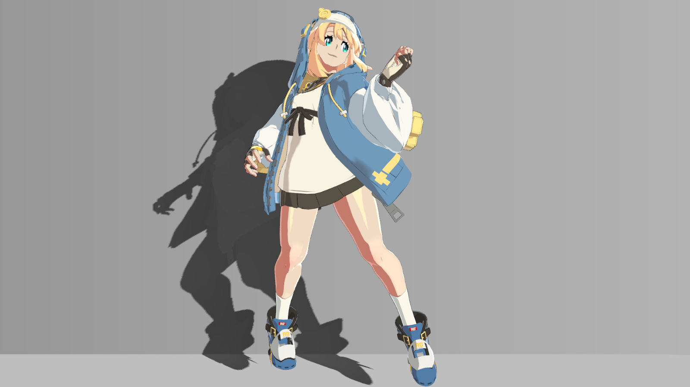

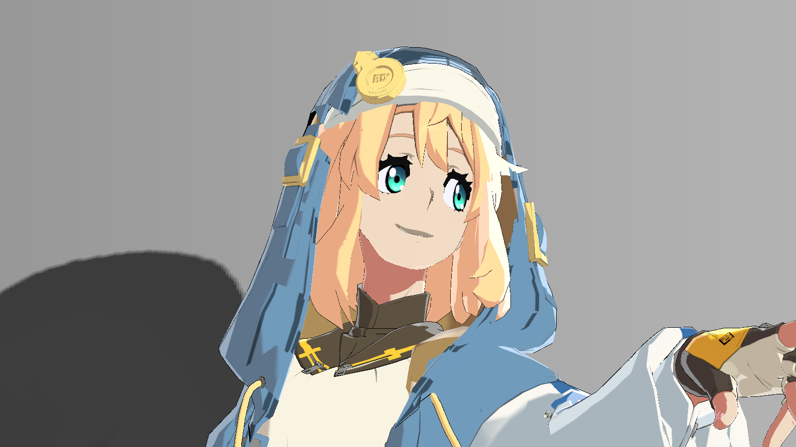


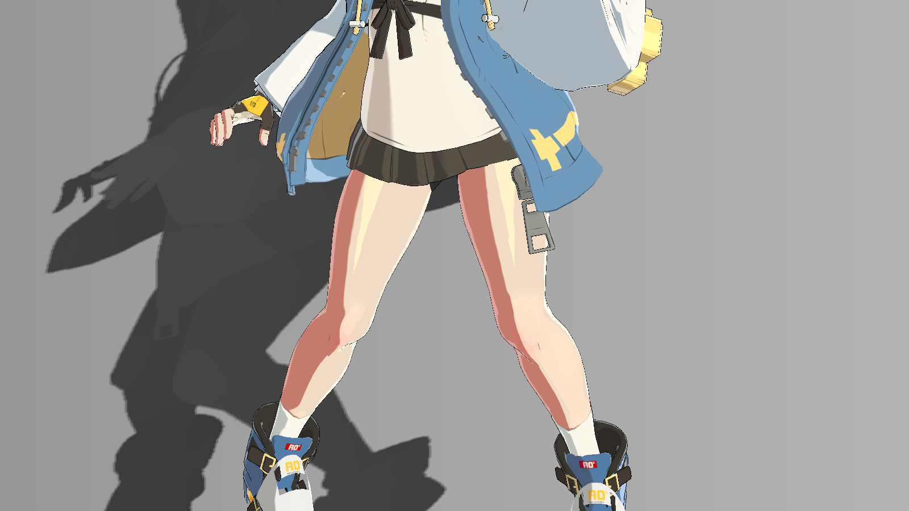

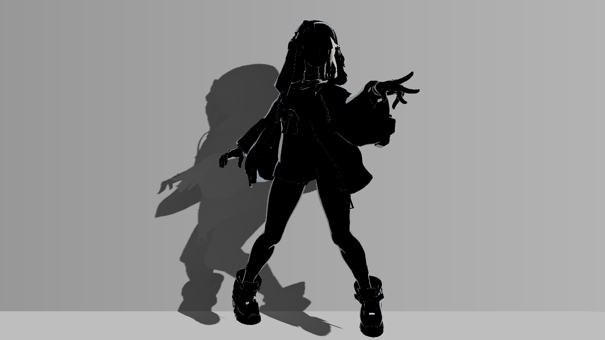

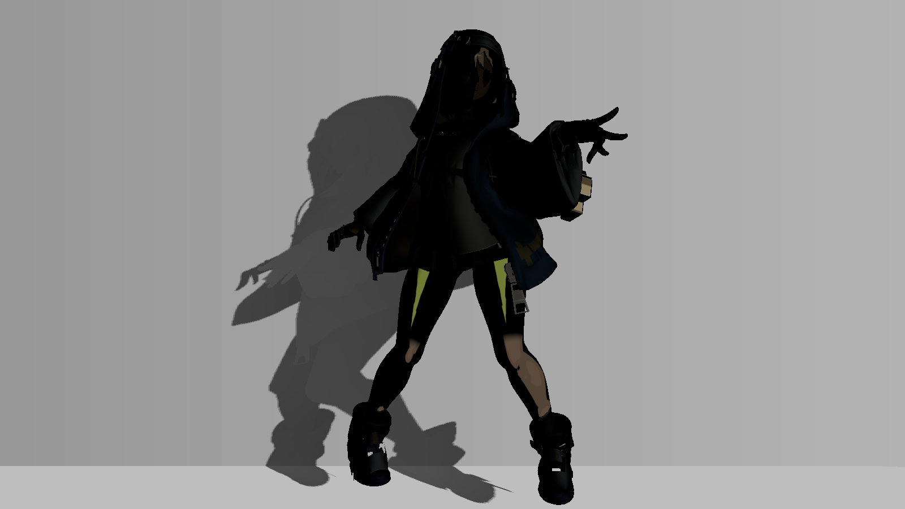

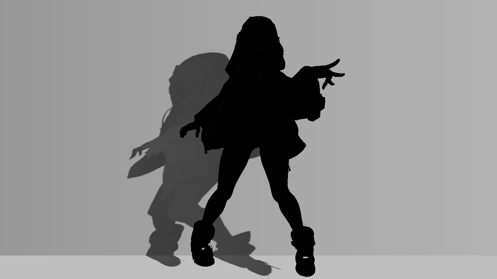

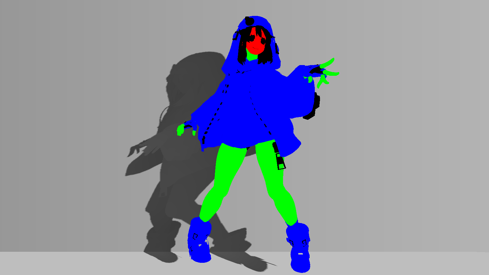

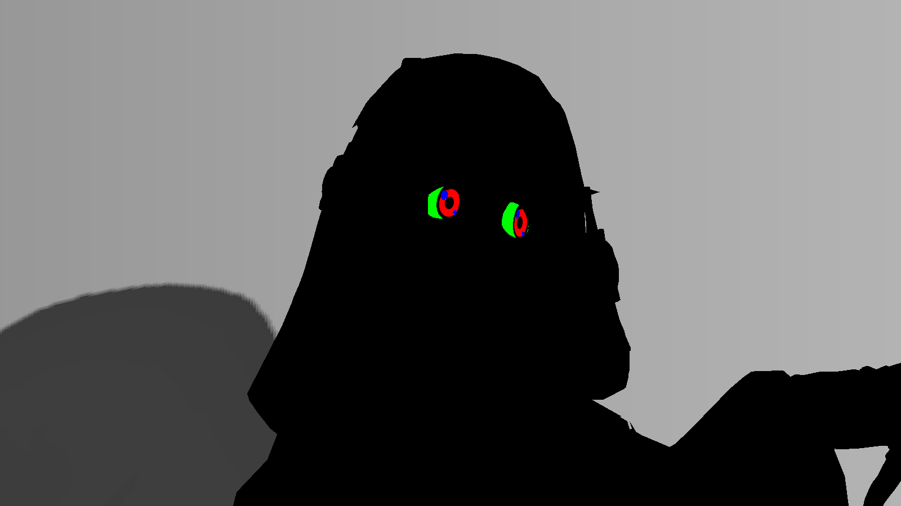

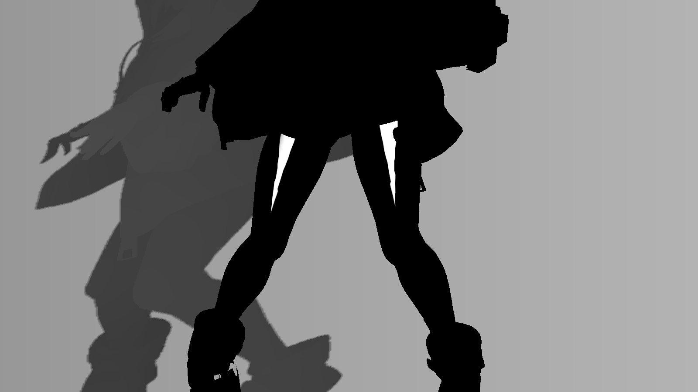


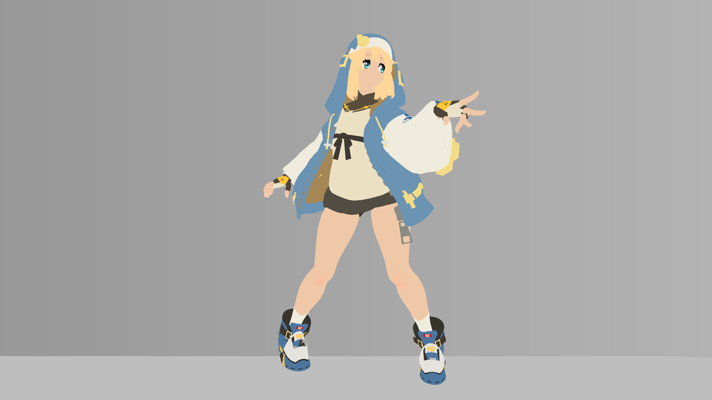

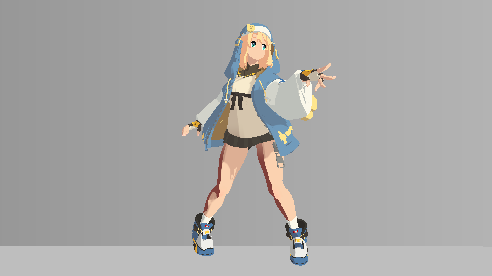

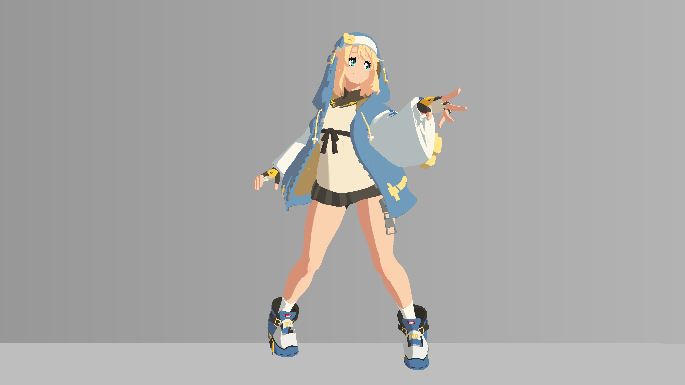


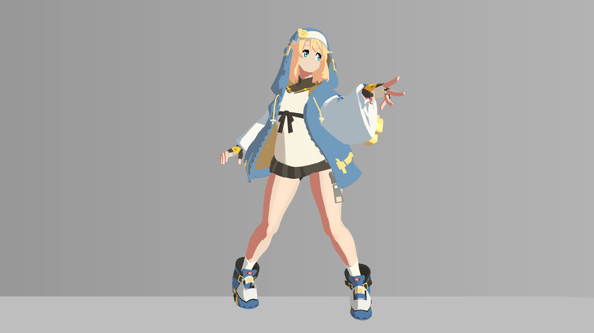


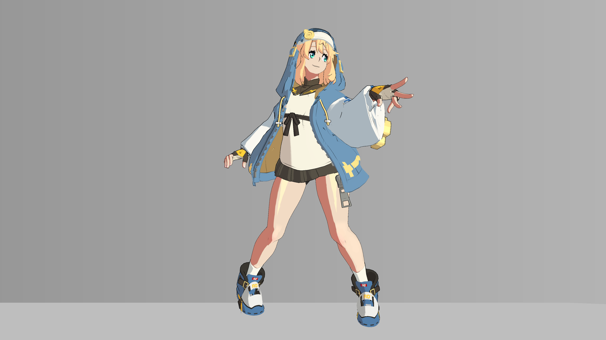


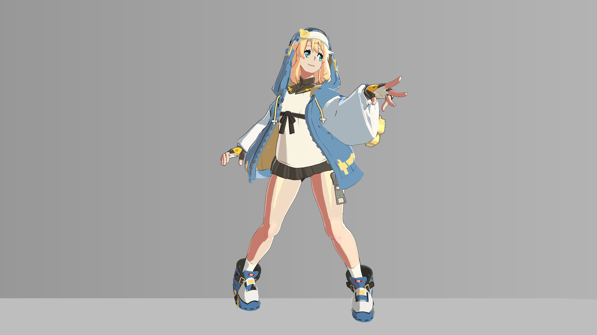
2026-10-21 · 只读采集 · 不含解包资源和音乐
资料清单与章节大纲供审阅；本包不是完整教程或可运行工程。
资料清单 A. 9 份当前工程渲染源码：6 个 Shader + 3 个 C# 脚本 核心： sources/BridgetToon.shader：主体漫反射、材质高光、边缘光、内部线、外轮廓、ShadowCaster。 sources/StageShadowReceiver.shader：背景/地面梯度与投影接收。 sources/GGSTGeometryDepth.shader：离屏头发/角色深度图。 sources/GGSTRegionalShading.cs：Renderer 分区与只读脸部坐标 MPB。 sources/GGSTGeometryShadowMaps.cs：原有 Renderer 离屏绘制、投影矩阵、全局阴影参数。 sources/BridgetImitateProfile.cs：角色原点/身高 MPB 和质量设置。 辅助： sources/GgstDecal.shader：X2 Multiply 贴花。 sources/GgstGlow.shader：基础色发光输出。 sources/GgstShadowParked.shader：禁用旧辅助阴影几何的绘制。 辅助材质保留在资料中用于解释材质槽，不代表站立最终画面都在使用这些槽。 原文、源码行数、来源相对路径、SHA256：data/source_index.csv。 B. 实际参数与环境 data/materials_saved.json：12 个材质完整保存参数，含历史冗余字段及纹理引用。 data/material_parameters.csv：793 行“材质 × Shader 声明属性”记录，区分默认值、保存值、脚本覆盖。 data/shader_properties.csv：165 项 Shader 属性声明（跨 6 个 Shader 合计）、类型、默认值与源码行号。 data/runtime_overrides.csv：6 类覆盖规则；动态值不能冒充常数。 data/runtime_write_sites.csv：3 个渲染脚本中的具体写入行。 data/saved_scene_rendering.json：已保存主场景的相机、灯光、渲染组件、Renderer 材质槽及 Prefab 材质覆盖。 data/environment.json：Unity 版本、Built-in 相关配置、Linear、质量设置与包依赖；包依赖不等于全部必须安装。 data/debug_outputs.csv：44 个 Debug 输出的真实表达式与行号。 C. 贴图接口说明（没有贴图文件） data/texture_bindings.csv：材质槽位、贴图引用名、Tiling、Offset。 data/texture_import_settings.json：11 张被引用贴图的尺寸、sRGB、采样、MipMap、平台覆盖等。 notes/03_texture_channels.txt：通道语义、UV、Alpha 与色彩空间注意点。 D. 21 张真实渲染图 images/stages/00.png～08.png：独立演示副本的 9 张原生 4K 图，同镜头同站立 cell 00，逐层展示效果，刻意省略投影。 images/project/：12 张原工程历史验收图，包括最终画面、脸部近景、可控大腿高光对比、分区/高光/边缘光/线条诊断。 data/images_manifest.json：每张图的来源、用途、尺寸和哈希。 腹部/腿部 shade_before/after 同时改过阴影和高光，不能描述成纯阴影单变量实验。 E. 验证证据 evidence/project_snapshot_comparison.json：当前磁盘工程与旧教程快照比较。 evidence/historical_scene_rendering.json：旧场景运行资料；补充当前 YAML 中 Prefab/运行时槽位的解释，不能标成今天的实时读取。 evidence/historical_standing_audit.json：此前站立播放验证摘要，无动画关键帧或骨骼矩阵内容。 evidence/historical_4k_validation_summary.json：此前 4K 演示逐帧验证摘要。 evidence/readonly_audit.json：本次整理前后工程哈希核对及打包内容检查。 MANIFEST.json：包内全部文件哈希与大小。 F. 未打包 原始/自制贴图像素、模型、动画、控制器、场景、Prefab、解包文件、参考视频、音乐和带音乐的视频。 旧 HTML 教程包含原图、嵌入通道预览和参考视频帧，因此未直接复制。
建议章节大纲（这是写作计划，不是已经补齐全部对照实验的教程） 00 最终效果与范围 说明是当前 Unity 项目的风格化复刻，不宣称原游戏完整实现。 图：images/project/final.png；images/stages/08.png。区分含投影工程画面与无投影演示副本。 01 环境、相机与主光 Unity 2022.3.62f3c1、Built-in、Linear、方向光、环境项、4× MSAA、构图。 数据：environment.json、saved_scene_rendering.json、BridgetImitateProfile.cs。 验收：固定曝光/光照/姿态/分辨率后再比较效果。 02 贴图通道与导入 Base/Sss/ILM/Detail/OLM、分区图、材质分类图、UV0/1/2、顶点色。 数据：texture_bindings.csv、texture_import_settings.json、03_texture_channels.txt。 验收：Debug 1～9；原图不随包提供，读者准备自己的资源。 03 材质划分与覆盖关系 四个主体材质差异、辅助槽、保存值与 PropertyBlock、角色只读坐标。 源码：GGSTRegionalShading.cs、BridgetImitateProfile.cs；数据：runtime_overrides.csv。 验收：Debug 22，头部和身体共享材质时仍正确分区；不要批量替换全部槽。 04 Shader 总体流程 区分章节顺序与真实执行顺序；说明 CleanShade、Focused、ThighLobe 等覆盖先前计算。 源码：BridgetToon.shader；数据：shader_properties.csv、debug_outputs.csv。 验收：列出最终 diffuse/spec/rim/ink 的来源，不把旧分支参数误当最终结果。 05 基础两段式明暗 半兰伯特、ILM.G 偏移、顶点 R、阈值、窄过渡、阴面色。 图：stages/00→01；对照时注意基础色阶段还移除了其他光照项，因此是阶段演示。 验收：Debug 10 是旧 band，最终漫反射还要看 Debug 16。 06 脸部、皮肤、衣料分区 分区遮罩、白袖/腹部碎影整理、腿部阈值、简化下颌暗面。 图：stages/01→02、project/face.png、region_debug.png。 验收：脸无多余暗带、腹部明暗简洁；Debug 38/41/42。 07 亮面与暖色阴面 Palette 只影响漫反射，皮肤、白袖、胸前衣料分别控制。 图：stages/02→03；数据：_Palette* 保存值。 验收：不要把 Vector 乘数当最终 sRGB 颜色；高光和线条保持各自职责。 08 头发投脸、自阴影与场景投影 自定义深度图、投影坐标、Bias/过滤、BeforeForwardOpaque 调度、CleanShade 的覆盖关系。 源码：GGSTGeometryShadowMaps.cs、GGSTGeometryDepth.shader、StageShadowReceiver.shader。 当前脸部主要材质 HairFaceShadowStrength=0；场景投影仍由独立路径提供。 图：project/final.png；无当前同条件单变量投影 A/B，标为待补，不用视频阶段图伪造。 09 按材质区分高光 RGBA 分类；发丝亮带、布料柔光、皮肤微光、金属亮芯；FocusedSpec 使用整理后受光。 图：stages/03→04、project/specular_debug.png。 验收：Debug 13 看最终高光；26～29 是基础分材质诊断，不完整代表最后 Focused/Thigh 修正。 10 大腿局部高光 原 UV 域、中心曲线、收尖宽度、朝向约束、浅金色亮块与替换范围。 图：stages/04→05、project/thigh_before.png / thigh_after.png、thigh_lobe_debug.png。 验收：Debug 43/44，不能让局部高光覆盖膝盖/小腿；换 UV 时重新设计。 11 外轮廓与内部线 屏幕像素外扩、材质宽度/墨色、ILM.A 连续覆盖率过滤、描边法线契约。 图：stages/05→06、project/ink_debug.png。 验收：不同分辨率比较需统一视觉线宽；零宽度材质保持零；确认 TANGENT 的实际含义。 12 眼睛层次与高光 虹膜上暗下亮、边缘层次、眼白、保留原白高光；不创建新的运动亮点。 图：stages/06→07、project/eye_regions.png、face.png。 验收：保护瞳孔与线条；效果幅度小，后续可补同姿势局部 A/B。 13 边缘光 N·V、材质缩放、浅色混合、暗面保留、脸部降低强度。 图：stages/07→08、project/rim_debug.png。 验收：区别高光与 rim；不把旧 _RimWidth 当主要调节量。 14 验收与排错 静态分层检查和站立循环稳定性、源码/参数/图版本对应、导入错误和覆盖失效。 数据：历史验证摘要；只规划站立验证，不做 900cs。 验收：新教程未来的可复刻性测试需在独立环境进行，历史通过不等于新环境通过。 每章写作结构：问题 → 原理 → 源码位置 → 输入/实际参数 → 操作步骤 → 同条件效果图 → 验收 → 常见错误。 附录：完整参数表、贴图接口表、Debug 编号、Renderer 覆盖规则、移植限制、来源/许可。
贴图与顶点输入契约（只描述当前 Shader 的使用方式，不代表已证明原游戏通道定义） _MainTex / BGT_base：RGB 基础色；sRGB=1。主体 Opaque 输出，不把 A 当透明度。 _ShadowMap / BGT_Sss：RGB 阴面颜色；sRGB=1。当前用途是颜色混合，不是物理次表面散射。 _LightMap / BGT_ilm：sRGB=0。 R：乘 255 后参与旧材质分类；与衣料/皮肤有混杂，最终精修使用单独分类遮罩。 G：明暗信号偏移，以 _RampMaskCenter 为中性点，不是直接乘整张图的通用 AO。 B：原有局部高光细节与后备高光分支输入；不要当作整片粗糙度/金属度。 A：内部墨线覆盖率=1-A，不能当透明度。只有 A 做特定屏幕足迹过滤。 _DetailMap / BGT_detail：RGB 乘法细节，TEXCOORD1；sRGB=0；1024×1024。 albedo=base*lerp(1,detail,_DetailIntensity)。CoatExterior 的强度=0。 _OutlineMap / BGT_olm：RGB 墨色，sRGB=1；不是 Alpha 宽度贴图。 _RegionalMask / BGT_RegionalMask：R=皮肤，G=白袖；sRGB=0。 脸和身体不只靠贴图区分，还需 Renderer MPB 的 _RegionalHead。 _FourMaterialSpecMask / BGT_SpecularClassMask：RGBA=头发/布料/皮肤/金属；sRGB=0。 同时供高光、CleanShade 衣料、线条、边缘光读取；R 还被头发深度 Shader 用作 caster mask。 A 是金属分类，不是透明通道；alphaIsTransparency=0。 _MainTex / BGT_decal（辅助贴花 Shader）：RGB 线性数据；sRGB=0。 Blend DstColor SrcColor 形成 X2 Multiply，中性输入为 0.5；不能当普通透明贴图混合。 尺寸和导入设置以 texture_import_settings.json 为准。 主图集为 2048×2048；Detail/Decal 为 1024×1024。BGTW 武器组也为 1024×1024。 filterMode=1 表示 Bilinear；wrap=0 为 Repeat，1 为 Clamp；当前主体贴图 alphaIsTransparency 均为 0。 平台配置需先看 overridden。不能把未启用的平台保存值当作实际覆盖。 注意：武器 BGTW_ilm 的现存 sRGB=1，与主体 BGT_ilm 不一致。它属于当前未显示的武器预览资料，不能写成推荐的数据贴图设置；本次没有修正。 顶点输入： POSITION：现有蒙皮输出的位置；本包不提供模型或改网格操作。 NORMAL：主要光照法线，转换至世界空间。 COLOR.R：AO/明暗控制，lerp(1,vertex.r,_AOStrength)。 TEXCOORD0：主图集 UV。 TEXCOORD1：细节 UV（C# mesh.uv2）。 TEXCOORD2：可选镜像 UV（C# mesh.uv3）；四主体材质当前 _UseMirroredUV=0。 TANGENT.xyz：_UseSmoothOutline=1 时作为描边法线使用，不是“任意模型的标准切线都可代替法线”。 当前四主体材质 _UseSmoothOutline=1。本次未审计网格顶点通道数值，不能证明换模型直接可用。 不提供任何原始或自制贴图像素。 换图集时应自己制作 R/G 分区和 RGBA 材质分类，关闭 sRGB，保持 Alpha 数据。 眼睛、胸前衣料和大腿高光含 2048 图集像素坐标，必须替换成新模型适用的域/遮罩。 不能仅缩放贴图尺寸便宣称完成移植。
实际参数与生效关系 采样层级：Shader Properties 默认值 → .mat 保存值 → Renderer MPB / Shader 全局变量 → Shader 内部条件与覆盖顺序。 材质表中的 savedValue 不自动等于当前屏幕最终效果；不同层级分别查 CSV 和源码。 数值均为磁盘保存值或源码规则。本次不采集 Play 内存实例、不推算任意帧脸部坐标。 当前基础环境：Unity 2022.3.62f3c1；Built-in（Graphics 和各质量档 SRP 引用为空）；Linear。 主场景：Assets/Scenes/Bridget_ReferenceMatch.unity。 主相机：Perspective/FOV 54，位置(-0.113,0.903,1.822)，HDR/MSAA 开；精确四元数见 saved_scene_rendering.json。 方向光：Intensity 1.1，白色；旋转四元数(0.07075682,0.8591888,-0.12371239,0.49140963)。方向光照明由旋转决定。 Profile：MSAA=4、shadowDistance=20，并设 All/High。 四主体材质：Base_Imitate、BaseSecondary_Imitate、BodyBaseFlip_Imitate、CoatExterior_Imitate。 四者 CleanShade、FocusedShade、FocusedSpec、Palette、FourMaterialSpec、ThighLobe、ReferenceRim 均保存为 1。 四者 _ThighLobeStrength=0.16；_ReferenceRimWidth=0.24；_ReferenceRimStrength=0.5。 _OutlineWidth：Base/BaseSecondary/CoatExterior=0.8，BodyBaseFlip=0。 _DetailIntensity：Base/BaseSecondary/BodyBaseFlip=0.278，CoatExterior=0。 _EyeRefineEnabled / _FaceDiffuseRefine：Base/BaseSecondary=1，另外两者=0。 _HairFaceShadowStrength：Base/BaseSecondary=0，BodyBaseFlip/CoatExterior=0.75。 不能把最后一项写成“全体材质为零”或“只要为0.75就一定产生脸部阴影”；还需脸部区域门控和后续 CleanShade 覆盖。 运行时要点： _RegionalEnabled：.mat=0；活动 GGSTRegionalShading 根据 strength 写入 MPB，已保存 strength=1。 _RegionalHead：body=0、standingHead=1；脸坐标来自现有头部 Transform 的只读矩阵。 _CharacterOriginWS / _CharacterHeight：Profile 根据 root 与启用时 bounds 写入，属于动态/初始化结果。 阴影脚本发布 _HairShadow* / _StageShadow* 深度纹理、矩阵和开关；Depends on Ready、Renderer 可见性及 draw flags。 保存的 drawHairCasters=1、drawStageCasters=1、suspendMaps=0；RFloat hair=1024、stage=2048（源码常量）。 hairRadius=0.28、hairRange=1.2、offset=0.08；stageRadius=2、stageRange=8。 Shader 的最终生效顺序： 颜色/Detail采样 → 后备明暗/分区 → 旧脸部修正与投脸 → Palette → CleanShade重建漫反射 → Focused局部漫反射 → 眼睛漫反射 → 基础/分材质高光 → Focused和ThighLobe替换 → ReferenceRim → 漫反射+环境+高光+rim → 内部线 → 原眼睛高光恢复 → 独立外轮廓Pass。 CleanShade 当前脸部亮暗依据世界空间 n.y；这是固定参考风格的美术近似，不是通用脸部SDF。 旧侧脸参数仍存在，不等于最终脸上必然有暗带。 _RimWidth 是旧后备路径，当前分类区域主要由 _ReferenceRimWidth 控制。 属性面板 _DebugMode 声明范围仍是0～24，但代码实际实现1～44；要查看更高编号需在练习副本通过脚本 SetFloat，不要修改原项目来迁就教程。 演示图与主工程的差别： images/stages 是独立副本累计开关，不是主工程新增的配置。 它省略场景投影；相机投影 m00/m11 乘0.94；4K时描边像素宽度乘2以保持原1080p视觉比例。 主体材质保存表仍记录主工程0.8/0值，不能混写成4K副本临时1.6/0值。 images/project 是原工程历史图，保留其原构图/投影。
移植依赖与资料缺口 1. 代码不是独立即用包。 GGSTRegionalShading 依赖 UEOriginalPersistentPresentation.groups 查找现有头部坐标。 GGSTGeometryShadowMaps 依赖 UEOriginalActionPlayer.nativeRendering 与 UEOriginalPersistentPresentation 取得现有 Renderer/骨盆。 这些动画/呈现桥接脚本未打包，避免将动画重建混入渲染教程。源码中保留相关类型用于说明原工程上下文。 教程后续应另写仅接受 Renderer、Transform、Light、Camera 引用的渲染适配示例，不能让读者复制这3个脚本后承诺零依赖编译。 BridgetImitateProfile 还有通过对象名 bgt_body.001 查找的回退逻辑，应在通用示例中改成显式引用。 2. 网格契约未重新检查。 平滑描边读取TANGENT.xyz，需使用已有满足契约的模型；不要为了教程改当前网格。 模型/骨骼/Bind Pose/动画均不随包分发。数据中的对象路径或骨骼数量只是记录，不是资源。 3. UV 专用常量。 胸前衣料、大腿亮块和眼睛使用当前图集的像素坐标，不能描述成任何角色可通用的公式。 拟写教程应同时说明“原工程精确复刻”与“换模型时重建区域”的区别。 4. 运行时证据边界。 当前MCP不可用，本次仅做磁盘只读检查；没有验证编辑器是否有未保存变化。 历史截图和播放报告均标为2026-10-20；当前428文件匹配旧快照，说明磁盘内容一致，不意味着今天重新播放验证。 Prefab引用解析并未重建完整场景实例。saved_scene_rendering.json保留未解析fileID；historical_scene_rendering.json可供交叉参考，不能伪造已解析结果。 5. 配图缺口。 已有9阶段图可说明累计变化；不是每个子参数独立实验。 腹部/腿部历史shade对比同时调整过高光，不可配“只改变阴影”的图注。 投影章缺少当前最终材质下同姿势单变量投影A/B。 眼睛章已有近景及分区诊断，缺少最终版本同条件局部开/关近景。 3个渲染脚本的独立通用适配器和全新工程复刻测试尚未完成。 6. 许可与素材。 包内仅项目渲染源码、接口数值与角色渲染截图；没有游戏贴图、模型、动画或音乐。 本次没有证明这些源码具有某种开源许可证；不要自动给所有文件标MIT或宣称角色资源可再分发。 历史参考视频仅提供原始用户给定链接供后续作者参考；未随包附视频帧或其内容。
给 GitHub GPT 的任务说明 请使用本资料包编写中文 GitHub 图文教程，并计划一个共用正文的 GitHub Pages 网站。 先读 README.txt、资料清单、章节大纲与资料缺口，再检查 sources 和 data。 教程定位为“基于当前 Unity 项目的罪恶装备风格渲染复刻”，不是原游戏源码还原。 先向我输出最终目录、待补资料和一个示范章节，确认后再展开全文。 按 notes/02_chapter_outline.txt 排列，保留真实代码覆盖顺序的单独说明。 每章包含：视觉目标、源码路径/行号、输入契约、实际参数、步骤、配图、验收与排错。 禁止编造 Shader 属性、运行时参数、截图、实验结果或原游戏实现结论。 属性来源以当前 sources / data 为主，历史记录只能按 evidence 标注引用。 明确区分 Shader 默认、材质保存、MPB/Global 覆盖与后续 Shader 分支覆盖。 本包没有原始/自制贴图、模型、动画或控制器。读者默认已有资源。 不要下载或添加解包资源、音乐，也不要将截图误当作可用纹理。 不要依赖 D 盘路径；用包内相对路径组织文档。源码快照中有原工程类型依赖，必须解释，不能宣称直接复制可编译。 可以提出独立渲染适配器，但要标为新示例并单独验证，不能改写原始快照后说它是实测项目源码。 只规划/验证站立循环，不添加900cs章节或测试。 建议交付：README.md、docs/chapters/*.md、参数/通道附录、图片索引、代码引用、MkDocs配置和GitHub Pages工作流。 未决定许可证前不要自动加覆盖全部文件的LICENSE。不要把生成文档或CI构建成功当成Unity渲染复刻验证通过。
所有图片保留原始像素；项目图与演示副本图使用不同构图，不能直接作为单变量对照。














